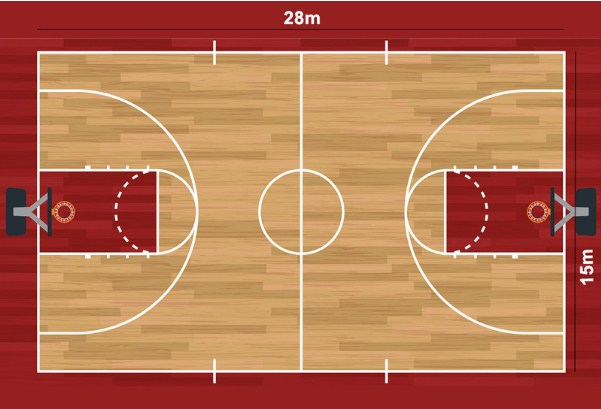

Kỹ Thuật BEEF
Bí quyết của những cú ném rổ chính xác nằm ở sự thăng bằng, hướng cùi chỏ và động tác vẩy cổ tay.
Website cá nhân về đam mê thể thao
Bóng rổ không chỉ là môn thể thao, đó là nơi rèn luyện ý chí bứt phá, tinh thần đồng đội và phong cách sống năng động của Nguyễn Võ Rin Đô.
Khám phá chủ đềTôi chọn chủ đề bóng rổ vì đây là bộ môn thể thao tôi yêu thích và tập luyện mỗi ngày. Website này hướng tới những người bạn có cùng đam mê, muốn tìm hiểu về kỹ năng và lịch trình tập luyện cơ bản.
Hành trình đến với bóng rổ bắt đầu từ những cú ném hụt bóng, nhưng chính sự kiên trì đã giúp tôi làm chủ được sân đấu.
"Mỗi cú ném trượt đều là một bước đệm tiến gần hơn tới cú ném rổ thành công tiếp theo."
Bí quyết của những cú ném rổ chính xác nằm ở sự thăng bằng, hướng cùi chỏ và động tác vẩy cổ tay.
Xây dựng nền tảng bền bỉ trên sân đấu bằng các bài tập chạy bộ duy trì nhịp tim ổn định.
Tinh thần đồng đội và sự hiểu ý nhau qua từng đường chuyền mới là thứ tạo nên nhà vô địch.



Trong bóng rổ nửa sân (3x3) or toàn sân (5x5), việc chạy chỗ thông minh và tạo khoảng trống là chìa khóa ghi điểm dễ dàng nhất mà không tốn quá nhiều sức.
Kỹ thuật thay đổi hướng đột ngột khiến đối thủ mất đà.
Cần sự ổn định từ mũi chân đến cổ tay khi vẩy bóng.
Chiến thuật kèm người 1-1 cực kỳ tiêu hao thể lực.
Đường chuyền không nhìn hướng bóng, tạo sự bất ngờ.
Bước chạy hai nhịp chuẩn xác để đưa bóng vào rổ nhẹ nhàng.
Khả năng tranh chấp bóng bật bảng để chiếm quyền kiểm soát.